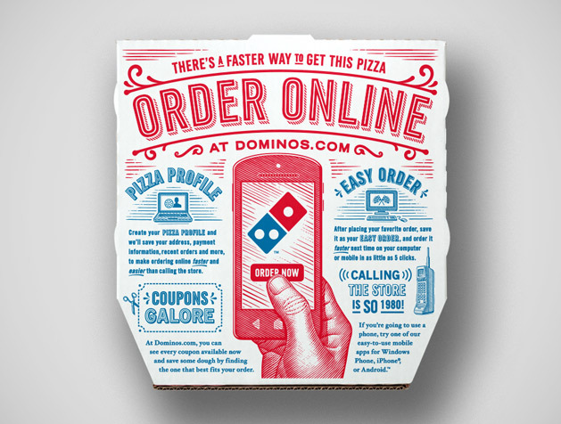

Franklin Gothic is a sans-serif typeface designed by Morris Fuller Benton in 1902 for the American Type Founders (ATF). It is part of the larger Gothic (or grotesque) type classification, which refers to early sans-serif typefaces that were popular in the late 19th and early 20th centuries. In the 1970s and 80s, ITC Franklin Gothic was released, expanding the family with additional weights and styles. Today, Franklin Gothic is available in numerous digital formats and is still widely used in publishing, branding, and advertising.
Franklin Gothic has been used by major brands, newspapers, and institutions, including The New York Times, PBS, and Nike. It remains a staple in typography due to its versatility, readability, and strong visual impact.
Trade Gothic
Trade Gothic is a sans-serif typeface designed by Jackson Burke in 1948 for Linotype. Unlike the more uniform sans-serifs of its time, Trade Gothic features an uneven, slightly condensed structure, making it distinctively quirky and dynamic compared to other grotesque typefaces. The typeface was developed incrementally over time, with Burke adding more weights and styles throughout the 1950s and 1960s. In 2009, Akira Kobayashi redesigned and expanded the typeface under Trade Gothic Next, refining the original quirks while maintaining its distinctive character.
Trade Gothic is widely used in editorial design, corporate branding, and advertising. Companies like Nike, Samsung, and the New York Times have used variations of Trade Gothic in their branding. Its condensed weights are especially popular for posters and headlines, where space efficiency and bold impact are needed.
Comparison
Both Franklin Gothic and Trade Gothic compared with a pentagram.Franklin Gothic ATF vs. Trade Gothic Next LT Pro comparison key for the following graphics.
Similarities
The similarities between Franklin Gothic and Trade Gothic's uppercase Rs include likenesses in their vertical stems and similarly angled slanted legs.The similarities between Franklin Gothic and Trade Gothic's uppercase and lowercase Gs include likenesses in the stacked shapes and vertical cut stems of the lowercase g, as well as the distinct vertical and horizontal tail of the uppercase G.The similarities between Franklin Gothic and Trade Gothic's numbers can be seen in their 2s, 4s, and 9s. When overlaid, there are evident likenesses in their widths, counters, and geometric structure of vertical/horizontal lines and curves.The similarities between Franklin Gothic and Trade Gothic's punctuation can be seen in their exclaimation point. When overlaid, there are evident likenesses in their widths and heights.
Differences
The differences between Franklin Gothic and Trade Gothic's uppercase and lowercase As include variations in the counter sizes and tails of the lowercase a, as well as the differing widths of the uppercase A.The differences between Franklin Gothic and Trade Gothic’s uppercase and lowercase Es include variations in the counter sizes and widths of the lowercase e, as well as differences in the leg lengths of the uppercase E.The differences between Franklin Gothic and Trade Gothic's numbers can be seen in their 1s, 5s, and 6s. Notable variations include differing angles of their stems, contrasting counter sizes, and overall structural differences, especially when comparing the 1s.The differences between Franklin Gothic and Trade Gothic’s punctuation can be seen in their question marks and quotation marks. Notable variations include differing counters and heights.
Examples and visual references
Franklin Gothic
Campbell’s Tomato Soup ad, 1965.Bank of America Logo, 1998-2018.TIME magazine, Mar 26, 2007.Showtime Logo, designed by Chermayeff & Geismar in 1997.Bruce Springsteen – 'Nebraska' album art designed by Andrea Klein in 1982.
Trade Gothic
Star Wars, 1977 end titles.Nike x Shanghai Marathon campaign, 2016.Òh!pera, Barcelona, 2024.Andy Warhol’s Frankenstein film poster, designed by The Rosebud Studio in 1973.

Domino's Pizza Box, designed by Crispin Porter + Bogusky in 2014.